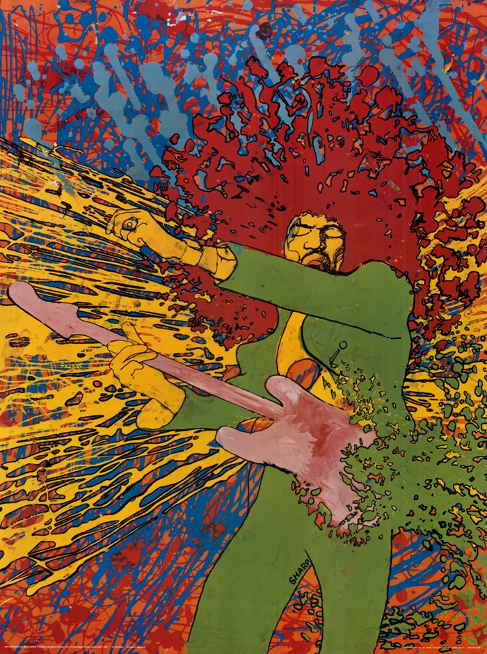

Introduction to Psychedelic Art

I chose psychedelic art as my topic because I find its visual style and uniqueness fascinating. The use of vibrant colors, patterns, distorted typography makes it stand out from other art movements. Over time, I have developed a personal interest in psychedelic art. I appreciate how it creates visually immersive experiences. I’ve seen psychedelic pieces all my life, and just never knew where it came from, so I wanted to explore the history behind this style to better understand it. I wanted learn what influenced its development, and how it became connected to music, culture, and social movements. I am especially interested in learning how psychedelic art evolved over time and how artists used their work to express ideas, emotions, and different ways of seeing the world.